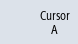
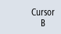
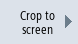

Using the cursor, you have the option of determining the precise values from a defined section. To do this, the cursor is positioned directly on the curve.
Procedure
 | 1. | A recording is opened in the "Trace" graphics window. |
|  | 2. | Press the "Cursor A" softkey.
The reference number, color of the variables and the color of the coordinate crossing point are displayed on the softkey. |
  | 3. | Position "(A)" at the position on the curve where you wish to start the measurement. The coordinates are specified in a tooltip and in the status line. |
|  | 4. | Press the "Cursor B" softkey. The reference number, color of the variables as well as the color of the coordinate crossing point are also displayed on this softkey. |
| | | Position "(B)" at the position on the curve where you wish to end the measurement. |
| | 5. | Press the "Both cursors" softkey to display the area between A and B. The coordinates of A and B as well as the difference "Δ" are displayed in the status line. |
| | | Press the active "Cursor A" and "Cursor B" softkeys again to deselect the position. When re-selected, the positions are reset. |
|  | | Press the "Crop to screen" softkey to display the area, defined by "Cursor A" and "Cursor B", in the complete graphic window. |
| | | Press the "Snap to waveform" softkey to move the cursor along the curve step-by-step. |